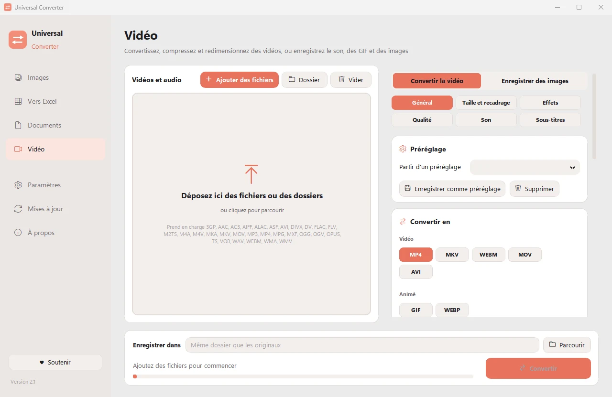

Enregistrer le son d'une vidéo en MP3
Gardez une chanson, une conférence ou un message vocal d'une vidéo, sans l'image. Vous pouvez d'abord ne garder que le passage voulu.
Télécharger pour Windows
Gratuit · Windows 10 et 11, 64 bits
Comment faire
- Ouvrez Universal Converter et choisissez Vidéo à gauche.
- Glissez vos fichiers ou un dossier entier dans la fenêtre, ou cliquez sur Ajouter des fichiers.
- Choisissez MP3 (ou M4A, FLAC, WAV, OGG, Opus) sous Convertir en.
- Cliquez sur Convertir. Les nouveaux fichiers sont enregistrés à côté des originaux, ou dans le dossier de votre choix.

Pourquoi hors ligne ?
Universal Converter travaille sur votre propre ordinateur. Vos fichiers restent privés, les gros fichiers ne posent pas de problème, et cela fonctionne sans connexion internet.
Autres choses qu'il sait faire
- Compresser une vidéo sans l'envoyer en ligne
- Convertir MKV, MOV, AVI et WMV en MP4
- Créer un GIF à partir d'une vidéo
- Extraire les tableaux d'un PDF vers Excel
- Réunir des photos en un seul PDF
- Convertir un PDF en Word
- Réunir plusieurs fichiers en un PDF
- Copier le texte d'une image (OCR)
- Convertir WEBP en JPG ou PNG
- Redimensionner des images ou les réduire à une taille de fichier